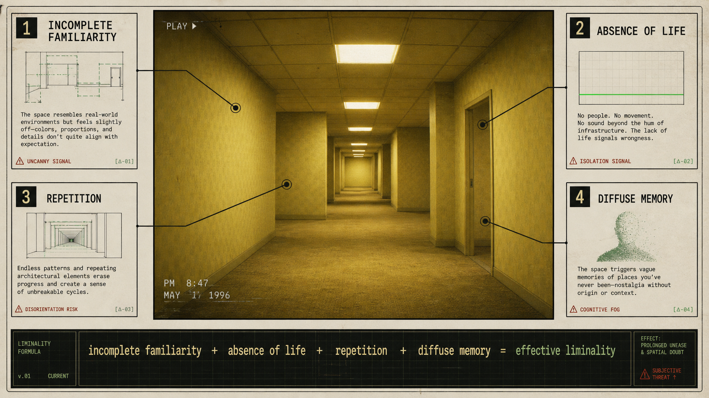
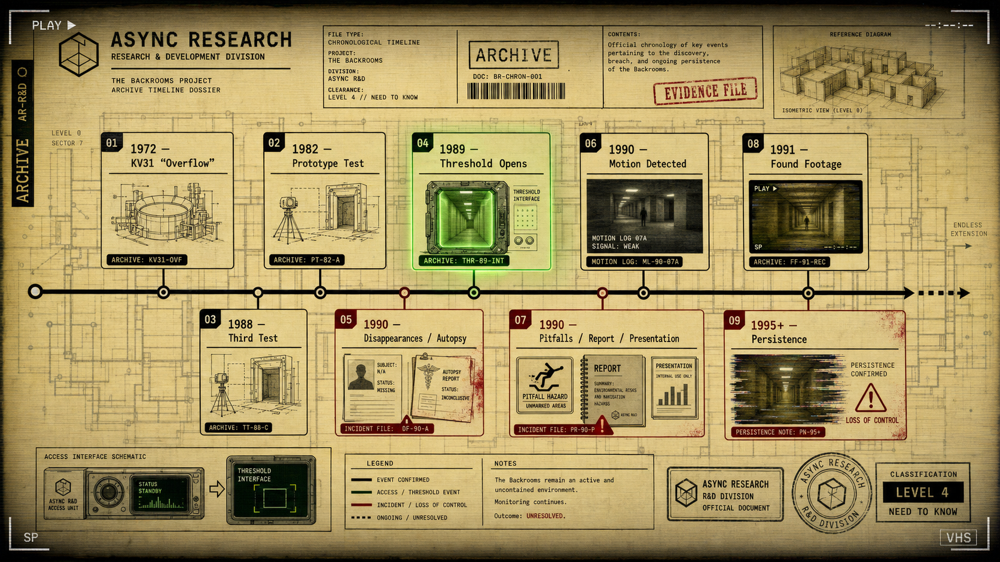
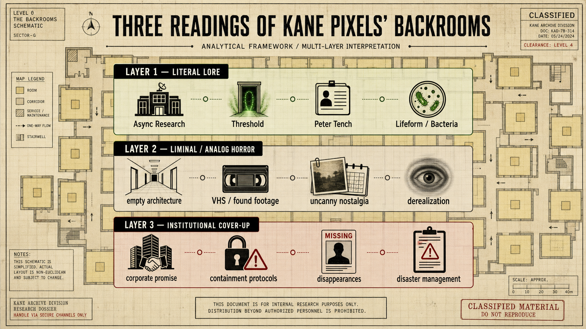
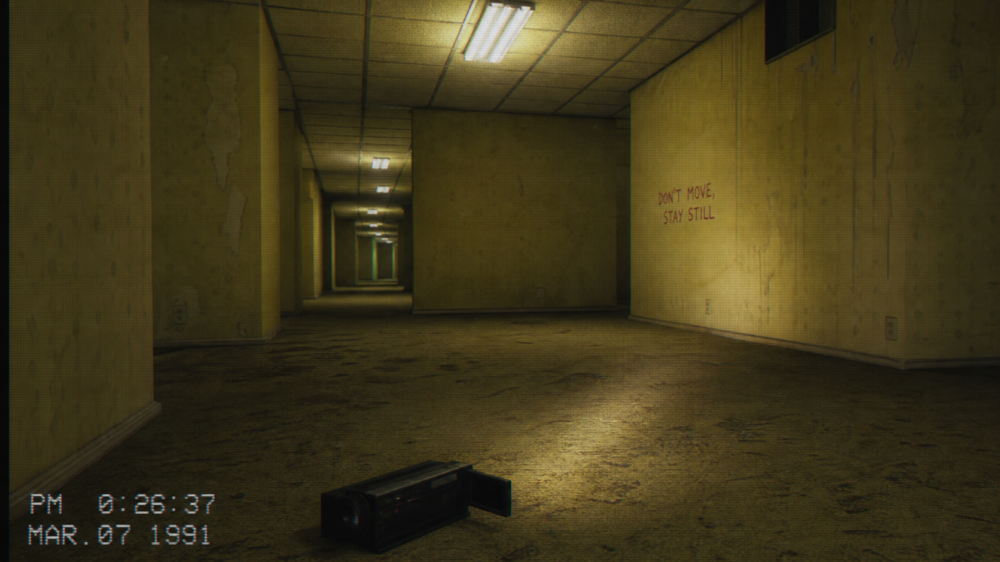
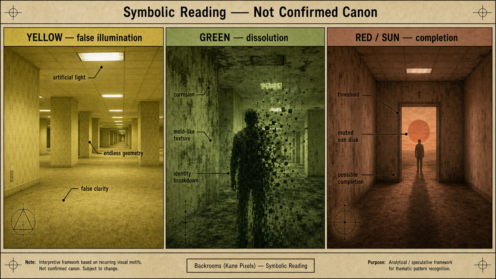

UFO / UAP
radar sweep / cockpit telemetry
sensor timelines, official workshops, sightings, and evidence cards
A modern, searchable, visual wiki for UAP/NHI, CIA remote viewing, Mars anomalies, ancient civilizations and liminal media. Built as an evidence-first interface, not a blog.
Filter by title, summary, or tags. Shortcuts: / focuses, Cmd/Ctrl+K opens commands, and Esc clears.
High-signal dossiers selected as entry points into the archive.
This note still does not contain the complete content of the paper, but it is no longer a simple placeholder. Within the vault, its function is to preserve a recent official AARO reference and make clear why it might mat
Declassified document associated with the remote viewing / Stargate universe. Records a `1984-05-22` session in which a subject describes perceptions about Mars at an approximate time of `1 million years` ago, using coor
Within the Mars package, this is the note that goes up one step compared to `there was water`. The hypothesis here is no longer just paleolakes or local rivers, but the possibility of an **ancient ocean in the northern h
**Ancient Civilizations is a major X Files topic.** It is not “Other”. It is a main lane alongside UAP/NHI, Mars anomalies, CIA/Stargate and consciousness/esoteric research.
Clickable topic map for jumping across the strongest evidence lanes.
A reusable editorial language for turning each X Files lane into diagrams, covers, cards, dossiers, and shareable visuals.
sensor timelines, official workshops, sightings, and evidence cards
FOIA documents, Stargate files, intelligence oddities, and transcript maps
Mars anomalies, official readings, geology, and image reanalysis
flood myths, megaliths, chronology disputes, and source comparisons
Backrooms, liminal architecture, analog horror, and uncanny media
miscellaneous anomalies and emerging research trails
Generated image assets are now first-class navigation and publication material, starting with the Backrooms dossier.





Chronological orientation by research lane, designed for scanning before deep reading.
Quick view of which zones currently concentrate the most published material.
Start from a research lane, then drill down into connected notes, sources, and open questions.
sightings, workshops, papers, observation, and tracking
documents, Stargate, Reading Room records, and intelligence oddities
anomalies, taxonomies, geology, ancient water, and official readings
alternative chronology, megaliths, flood traditions, and lost-prehistory hypotheses
uncanny architecture, liminal spaces, hauntology, nostalgia, weird fiction, and Backrooms lore
X Files curiosities that do not fit the main families
A mobile-friendly temporal orientation layer for the archive.
Summary derived from the base note areas/x-files.md.
Personal research area for anomalies, intelligence archives, UFO/UAP, alternative archaeology, Mars folklore/science, liminal spaces and strange media.
X Files notes must separate:
Do not flatten weird material into belief. Preserve it, classify it and make it navigable.
System method: Prometheus System Operating Contract (private operating note)
Roadmap: wiki-improvement-roadmap
A strong X Files note should include:
raw/articles/raw/papers/resources/resources/x-files-site/distx-filesufouapciaremote-viewinguncannyliminal-spaceshauntologyhouse-of-leavesbackroomsancient-civilizationslost-civilizationyounger-dryasSorted by updated or created.
Follow `https://www.latest-ufo-sightings.net/` as a secondary source/aggregator of UFO-UAP content to spot new articles worth referring to X Files.
Area: [[areas/x-files]]
Area: [[areas/x-files]]
Source hub: [[resources/lex-fridman-podcast/index]]
Source hub: [[resources/diary-of-a-ceo/index]]
This is the master map for the **Ancient Civilizations** lane of the X Files wiki. It is not a belief page. It is a research control layer for tracking claims about deep prehistory, catastrophe memory, megalithic archite
sightings, workshops, papers, observation, and tracking
This note still does not contain the complete content of the paper, but it is no longer a simple placeholder. Within the vault, its function is to preserve a recent official AARO reference and make clear why it might mat
Source hub: [[resources/lex-fridman-podcast/index]]
Source hub: [[resources/lex-fridman-podcast/index]]
First part of the trilogy. Serves as a gateway to the Stargate universe: Cold War, Fear of Soviet Advantage, SRI, Ingo Swann, Joseph McMoneagle, Contemporary Training, and the Appearance of Ed Dames. It does not attempt
Follow `https://www.latest-ufo-sightings.net/` as a secondary source/aggregator of UFO-UAP content to spot new articles worth referring to X Files.
The note no longer depends only on the newspaper article. It is supported by two local primary sources: the paper published in *Scientific Reports* and its preprint in Research Square. Both support a statistical associat
documents, Stargate, Reading Room records, and intelligence oddities
Declassified document associated with the remote viewing / Stargate universe. Records a `1984-05-22` session in which a subject describes perceptions about Mars at an approximate time of `1 million years` ago, using coor
This node is still an unresolved CIA record, but it is no longer an empty note: its function within the vault is to preserve a stable identifier of the Reading Room and explicitly mark that it is a source pending actual
This CIA Reading Room record should no longer be read as an isolated placeholder: within the vault, its main importance is that it is directly connected to `@@PH0@@`. Although the `print` view is blocked from this enviro
`GONDOLA WISH` is an important piece of the Stargate package not because it proves that parapsychology worked, but because it shows something more concrete: in 1978 there were actors in the US military/intelligence appar
The second part is the most important if you want to understand how the documentary tries to defend the seriousness of Stargate. It partially corrects the excess of part 1 by questioning `Ed Dames`'s method, looks for `J
Third part and closing of the trilogy. The almost complete focus is `Mars 1,000,000 BC`, probably the most famous and most extreme case of Stargate folklore. The episode combines an extensive interview with `Joseph McMon
This note does not replace the three documentaries: it orders them. Its function is to serve as a master map of the `Stargate / CIA / remote viewing` package within the wiki, separating layers that appear mixed in the do
anomalies, taxonomies, geology, ancient water, and official readings
Within the Mars package, this is the note that goes up one step compared to `there was water`. The hypothesis here is no longer just paleolakes or local rivers, but the possibility of an **ancient ocean in the northern h
This is the baseline note for the Mars package to answer a simple but central question: **what part of the story about a habitable ancient Mars is supported by strong science**. The NASA sources used here do not talk abo
Cydonia is one of the most useful regions in the entire Mars folder because it concentrates two stories at the same time: a real scientific story about Martian geology, ice, and climate; and a cultural history about the
`Face on Mars` is probably the most famous example of modern planetary pareidolia. The usefulness of this note is not only in recording that NASA considers it a natural formation, but in making clear *how* an image can l
The story of the `Martian canals` is one of the best cases to understand how the modern Martian myth was born. It is not based on a simple fraud, but on a much more interesting combination: **difficult observation, ambig
Working index to sort the Mars package in X Files with a simple taxonomy: `strong`, `debated`, `speculative`.
Framework node to read Mars within X Files without mixing three different layers: `real planetary data`, `visual anomalies`, `speculative lore`. The idea is not to kill the Martian imaginary, but to organize it to distin
alternative chronology, megaliths, flood traditions, and lost-prehistory hypotheses
**Ancient Civilizations is a major X Files topic.** It is not “Other”. It is a main lane alongside UAP/NHI, Mars anomalies, CIA/Stargate and consciousness/esoteric research.
This is the master map for the **Ancient Civilizations** lane of the X Files wiki. It is not a belief page. It is a research control layer for tracking claims about deep prehistory, catastrophe memory, megalithic archite
Derinkuyu and Kaymakli are not vague legends. They are real underground complexes in Cappadocia, Turkey. Derinkuyu extends to great depth and is commonly described as large enough to shelter thousands of people with live
Source hub: [[resources/diary-of-a-ceo/index]]
Source hub: [[resources/lex-fridman-podcast/index]]
Lake Van is the largest lake in Turkey, located in Eastern Anatolia / the Armenian Highlands. It is a saline soda lake in a volcanic region. The broader area was central to the Iron Age kingdom of Urartu, whose territory
Matthew LaCroix is a recurring X Files / Ancient Civilizations source focused on alternative ancient history, Sumerian and Mesopotamian traditions, flood myths, sacred symbolism, megalithic sites, Lake Van/Eastern Anatol
This is one of the most important evidence lanes in Ancient Civilizations because it is not based only on visual similarity or speculative engineering. It is anchored in actual ancient Near Eastern literature.
This note tracks recurring symbol systems in the Ancient Civilizations lane without treating visual similarity as proof by itself.
This interview is a high-density map of Matthew LaCroix's current ancient-civilization thesis: humanity may have inherited fragments of an older global sacred-science tradition, disrupted by late-Pleistocene catastrophes
The Younger Dryas was a real abrupt climate interval around **12,900–11,700 years before present**. It involved rapid cooling in the Northern Hemisphere, especially around the North Atlantic and Greenland, followed by a
uncanny architecture, liminal spaces, hauntology, nostalgia, weird fiction, and Backrooms lore
Broad conceptual framework on what liminal spaces are, why they produce restlessness and nostalgia at the same time, how The Backrooms crystallizes that aesthetic and why the phenomenon became a central mythology of rece
This note ingests two community analyses from `r/KanePixelsBackrooms` about the repeated **sun motif** in Kane Pixels’ Backrooms universe and its possible relation to alchemical symbolism, especially the sun-headed figur
Detailed timeline of the Kane Pixels universe focusing on Async Research, Threshold, and the transition of the Backrooms concept from corporate experiment to spatial, biological, and narrative disaster.
*House of Leaves* by Mark Z. Danielewski is one of the strongest literary anchors for the [[resources/uncanny-liminal-research-map]] category. It turns a house into an impossible labyrinth, turns academic apparatus into
This is the master category note for the **Uncanny / Liminal** lane inside [[areas/x-files]]. It connects anthropology, psychology, architecture, nostalgia, internet aesthetics, analog horror, haunted media and weird fic
X Files curiosities that do not fit the main families
Area: [[areas/x-files]]
Area: [[areas/x-files]]
Elevate the vault from useful notes into a maintained knowledge and publishing system. The standard is simple: important notes should become serious references with context, structure, critical reading, source separation